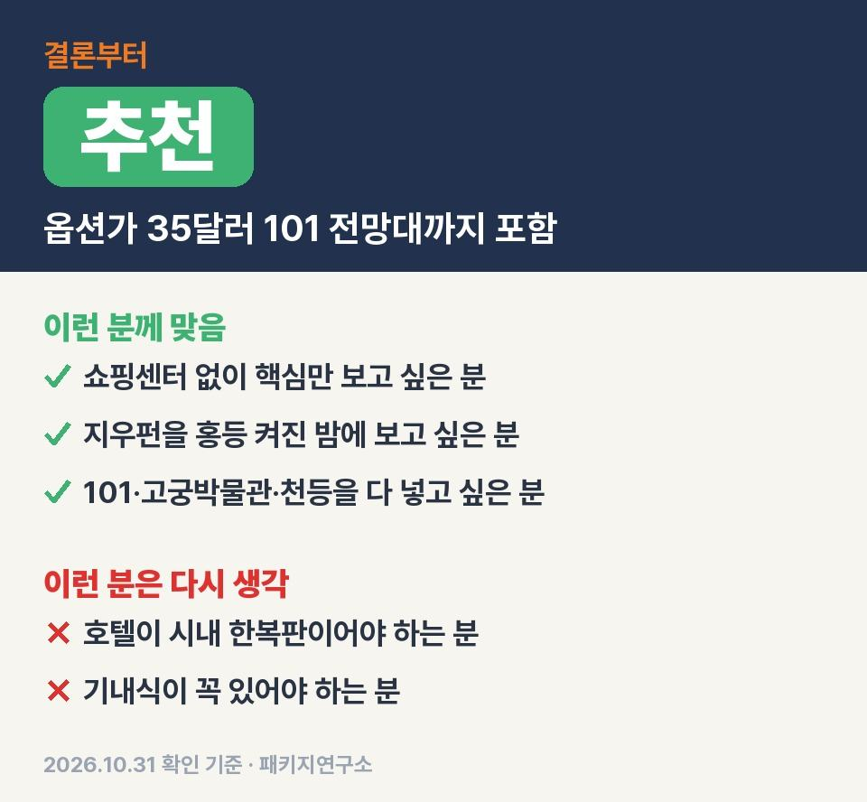
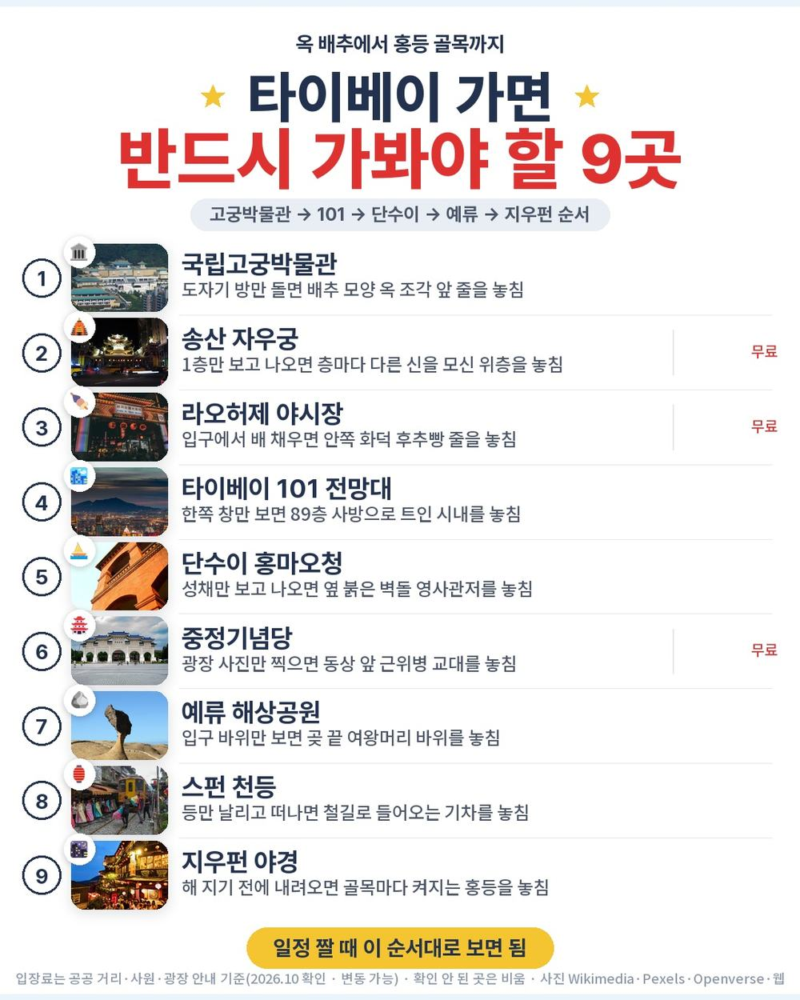
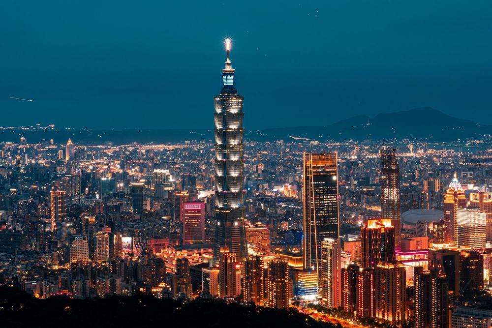
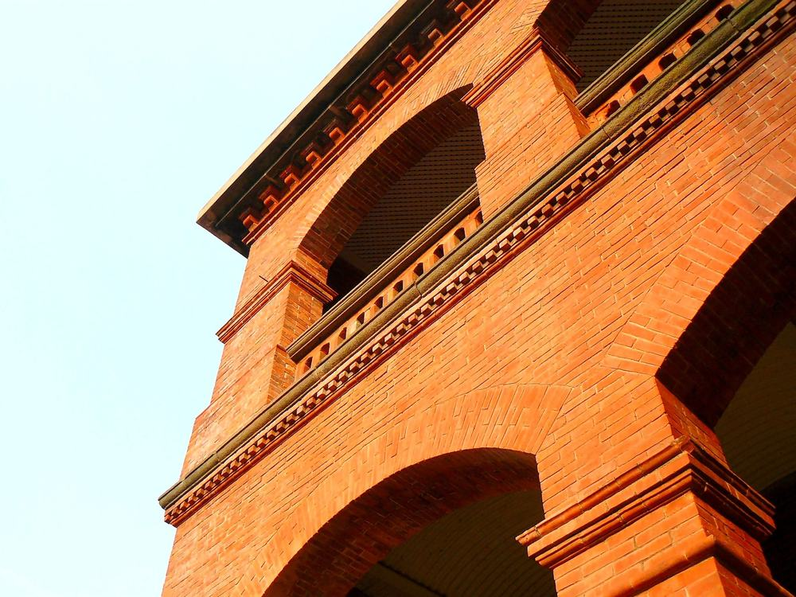
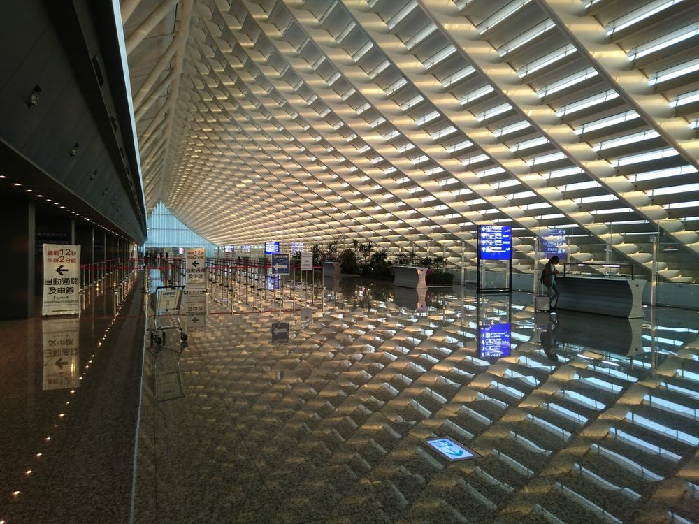

타이베이 패키지 3박 4일 참좋은여행 패키지 여행 89만 9천원, 지우펀을 홍등 켜진 저녁에 걷는 노쇼핑 일정
이 타이베이 상품은 지우펀이 셋째 날 마지막 코스라 홍등 켜진 골목을 보고 내려옴.
직접 다녀온 후기는 아니고 참좋은여행 일정표와 포함·불포함 원문을 하루씩 따라가며 따져 본 글임.
결론 — 추천. 쇼핑센터가 한 곳도 없고 101빌딩 89층 전망대와 시먼딩 자유시간까지 값에 들어 있음. 다만 호텔이 시내 한복판이어야 하는 분은 맞지 않음.

같은 목적지 패키지 오늘 값 나란히 비교
https://package-researcher.github.io/d/taipei.html?s=art

| 항목 | 내용 |
|---|---|
| 가격 | 1인 899,000원 (성인 · 11월 출발 기준) · 2인 1,798,000원 |
| 여행사 | 참좋은여행 |
| 항공 | 진에어 직항 (LJ171·LJ172) · 인천 2터미널 09:35 → 타오위안 11:30 / 타오위안 12:40 → 인천 16:00 · 기내식 없음 |
| 숙소 | 시외 특급 호텔 3연박 (미정 · 출발 2일 전까지 문자 안내 · 2인 1실) |
| 일정 | 3박 4일 · 버스 · 한국어 가이드 · 식사 9회 · 쇼핑 0회 · 선택관광 마사지 1개 · 가이드·기사 경비 1인 40달러 별도 |
▶ 내 출발일 오늘 기준 요금 확인 (제휴 링크 · 예약 시 수수료를 받으며 가격은 같습니다)
▶ 10월 31일 기준 타이베이 패키지 최저 59만 9,900원부터 — 출발일별 값 한 화면에: 비교 페이지
같은 일정을 트리니티항공으로 가면 1인 84만 9천원임 (10월 31일 기준 · 출발일마다 다름).
| 번호 | 내용 | 한 줄 답 |
|---|---|---|
| 1 | 1일차 — 공항에서 101 전망대까지 | 하루에 네 곳 |
| 2 | 2일차 — 단수이에서 시먼딩까지 | 망고빙수 2인 1개 |
| 3 | 3일차 — 예류·스펀·지우펀 야경 | 제일 많이 걷는 날 |
| 4 | 4일차 — 아침 먹고 귀국 | 점심 불포함 |
| 일차 | 가는 곳 | 버스 | 걷기 | 점심 · 저녁 |
|---|---|---|---|---|
| DAY 1 | 09:35 인천 출발 → 11:30 타오위안 → 국립고궁박물관 → 자우궁 → 라오허제 야시장 → 101 전망대 | 약 2시간 | 보통 | 현지식 · 현지식 |
| DAY 2 | 단수이(홍마오청·옛거리·진리대학) → 중정기념당 → 화산1914 → 시먼딩 자유 약 1시간 | 약 2시간 | 보통 | 현지식 · 현지식 |
| DAY 3 | 예류 해상공원 → 스펀 천등 → 지우펀 야경 → 마사지(선택) | 약 3시간 | 많음 | 현지식 · 현지식 |
| DAY 4 | 호텔 조식 → 12:40 타오위안 출발 → 16:00 인천 | 약 1시간 | 적음 | 없음 · 없음 |
1. 1일차 — 공항에서 101 전망대까지

아침 7시 인천 2터미널 미팅이고 비행기는 09:35에 뜸. 타오위안엔 11:30에 내림.
진에어라 기내식은 없음. 아침을 공항에서 먹고 타는 게 편함.
내리자마자 국립고궁박물관으로 감. 자금성에서 옮겨 온 보물이 29만 점이라는 곳이고 배추 모양 옥 조각 앞엔 늘 줄이 있다고 함.
다녀온 분들 얘기로는 전시실이 쌀쌀함. 얇은 겉옷 하나 챙기면 됨.
저녁은 자우궁과 라오허제 야시장. 자우궁은 1753년에 세운 6층 사원인데 층마다 모신 신이 달라서 별명이 신들의 백화점임.
야시장은 골목이 아니고 곧게 뻗은 길이라 노점만 따라 걸으면 됨.
첫날 마지막이 101빌딩 89층 전망대인데 원문에 옵션가 35달러 상당이라고 적힌 걸 값에 넣어 둔 게 이 상품에서 제일 큰 부분.
그날 놓치면 아까운 것: 전망대에서 한쪽 창만 보고 내려오는 것. 사방이 트여 있으니 한 바퀴 도는 게 좋음.
2. 2일차 — 단수이에서 시먼딩까지

조식 먹고 단수이부터 감. 영화 「말할 수 없는 비밀」 촬영지로 알려진 항구 마을임.
홍마오청은 스페인이 짓고 1642년부터 네덜란드가 지배했고 나중엔 영국 영사관이 됨. 붉은 벽돌 건물 하나에 주인이 여러 번 바뀐 셈.
진리대학이랑 옛거리도 이날 같이 걸음.
낮엔 중정기념당. 높이 70미터 하얀 건물에 남색 지붕이고 동상 앞 근위병 교대가 볼거리.
오후엔 옛 양조장을 고친 화산1914를 지나서 시먼딩으로 감.
시먼딩 자유시간 약 1시간도 원문에 옵션가 20달러 상당이라 적혀 있고 망고빙수 2인 1개, 버블티 1인 1잔이 같이 나옴.
솔직히 빙수가 2인 1개인 건 좀 아쉬움. 그래도 자유시간 안에 간식까지 챙겨 준 건 이 값에서 은근 큼.
그날 놓치면 아까운 것: 홍마오청 성채만 보고 옆 붉은 벽돌 영사관저를 안 들어가는 것.
3. 3일차 — 예류·스펀·지우펀 야경

이날이 제일 김. 버스로 약 3시간 움직이고 걷는 양도 가장 많음.
아침엔 예류 해상공원. 파도가 깎은 바위가 늘어선 곶이고 이집트 여왕 옆얼굴을 닮았다는 여왕 바위가 유명함.
낮엔 스펀에서 천등을 띄움. 천등은 4인에 1개가 값에 들어 있음. 다녀온 분들은 기차가 스치는 철길에서 등을 날리는 순간을 제일 많이 꼽음.
지우펀을 저녁에 넣은 게 이 일정의 핵심임. 해가 지고 골목마다 홍등이 켜진 다음에 걸어 내려옴.
계단이 많고 비가 잦은 동네라 편한 신발이 필수. 무릎이 불편하신 분은 가이드에게 미리 말씀해 두시면 좋음.
주말·연휴엔 차량 통제로 시내버스(약 20분)로 바뀔 수 있다고 원문에 적혀 있음.
호텔로 돌아오면 선택관광 마사지가 있음. 발 30분 30달러, 전신 60분 50달러. 안 하면 1~2시간 자유시간이고 불이익은 없음.
이 상품 조건 한눈에 (출발일 달력·두 분 값·비슷한 상품과 비교)
https://pkg-lab.com/pkg/APP1299_LJ/?utm_source=ghpages&utm_medium=post&utm_campaign=daily
같은 목적지 다른 여행사 패키지, 쇼핑·선택관광·가이드 경비까지 비교
https://pkg-lab.com/dest/TPE/m/2026-11/?utm_source=ghpages&utm_medium=post&utm_campaign=daily
4. 4일차 — 아침 먹고 귀국

호텔 조식 먹고 바로 공항. 12:40에 떠나서 인천엔 16:00 도착.
점심과 저녁은 포함이 아님. 기내식도 없으니 출국 수속 끝내고 공항에서 한 끼 드시면 됨.
마지막 날은 관광 없이 돌아오는 날이라 실제로 도는 건 1~3일차 사흘임.
값에 든 것과 현장에서 더 낼 돈
89만 9천원에 들어 있는 건 이럼.
진에어 직항 왕복, 시외 특급 호텔 3박, 식사 9회(딤섬·우육면·대만식 샤브샤브·현지식), 관광지 입장료, 천등 4인 1개, 망고빙수·버블티, 최고 1억원 여행자보험, 한국어 가이드, 버스.
| 항목 | 금액 | 필수/선택 | 비고 |
|---|---|---|---|
| 가이드·기사 경비 | 80달러 | 필수 | 1인 40달러 × 2명 (아동 동일) |
| 선택관광 마사지 | 0~100달러 | 선택 | 발 30분 30달러 · 전신 60분 50달러 (1인) |
| 4일차 점심 | 사 먹는 만큼 | 선택 | 기내식 없음 |
| 매너 팁 | 자율 | 선택 | 안 내도 불이익 없다고 안내됨 |
| 혼자 쓰는 방 | 240,000원 | 해당자만 | 1인 예약일 때 |
| 합계 (2인 필수분) | 80달러 (약 10만 7천원) | 1달러 1,340원 기준 |
두 분 필수분은 경비 80달러뿐임. 상품가 179만 8천원에 더하면 두 분 약 190만 5천원, 한 분 약 95만 2천원.
| 항목 | 금액 | 근거 |
|---|---|---|
| 인천–타이베이 왕복 항공 | 354,000원 | ICN↔TPE 직항 왕복 1인 (앞으로 두 달 직항 최저 운임 · 같은 날 값은 튀어서 제외 · 2026-10-31 마이리얼트립 조회) |
| 특급 호텔 3박 | 240,000원 | 2인 1실 1인분 (추정) |
| 식사 (9회) | 135,000원 | 딤섬·우육면·샤브샤브 포함 (추정) |
| 101 전망대·고궁박물관 입장 | 50,000원 | 1인 (추정) |
| 예류·스펀·지우펀 차량 | 70,000원 | 하루 투어 차량 2인 나눔 (추정) |
| 공항 이동 | 30,000원 | 타오위안 공항 왕복 (추정) |
| 여행자보험 · 유심 | 15,000원 | 4일 기준 (추정) |
| 가이드 | — | 자유여행은 없음 |
| 합계 | 약 894,000원 |
직접 짜면 1인 약 89만 4천원, 패키지는 경비까지 약 95만 2천원. 패키지가 6만원쯤 더 듦.
그 차이에 가이드와 버스가 들어 있음. 예류·스펀·지우펀은 직접 가려면 교통편을 따로 알아봐야 하는 곳이라 부모님과 가는 경우엔 이 6만원이 아깝지 않다고 봄.
자주 묻는 질문
Q. 타이베이 패키지 쇼핑은 몇 번 가나요?
A. 이 상품은 0번. 쇼핑센터를 들르지 않음.
Q. 타이베이 패키지 노쇼핑이면 101 전망대는 따로 내나요?
A. 안 냄. 101빌딩 89층 전망대 입장이 값에 들어 있음.
Q. 타이베이 패키지 가격 말고 현지에서 내는 돈은요?
A. 가이드·기사 경비 1인 40달러가 필수. 마사지는 고르는 분만 냄.
마무리
쇼핑 없이 고궁박물관부터 지우펀 야경까지 사흘에 다 넣은 상품.
호텔이 시외인 것만 괜찮으시면 꽤 알찬 일정이라고 봄. 쇼핑센터 없이 핵심만 보고 싶은 분께 맞음.
출발일마다 값이 달라서 가시려는 날짜 요금부터 보시면 됨.
같은 목적지 패키지 오늘 값 나란히 비교
https://package-researcher.github.io/d/taipei.html?s=art
이 글에는 네이버 제휴 링크가 포함되어 있으며, 링크를 통해 예약하시면 일정 수수료를 받습니다. 가격은 동일합니다. 가격과 구성은 2026년 10월 31일 확인 기준이며 출발일에 따라 달라질 수 있습니다.
▶ 이 상품, 영상으로 보기 (유튜브)
▶ 타이베이 패키지 오늘 값 나란히 비교
▶ 같은 목적지 다른 여행사 패키지, 쇼핑·선택관광·가이드 경비까지 비교: pkg-lab.com
사진 출처 (저작자 · 라이선스):
Fort San Domingo, Danshui, Taiwan (2363754753) — CC BY 2.0 (Wikimedia Commons) 원본
.jpg){kind=link}
2015-11-15 Sunrise at Taiwan Taoyuan International Airport T — CC BY-SA 2.0 (Wikimedia Commons) 원본

그 밖의 사진: Pexels
쇼츠·클립 영상과 사진:
【DJI Spark】九份的空拍!九フンを空から見てみた!千と千尋の神隠しの舞台!#213 — Shigeki Nakayama (YouTube, CC BY) 원본
TW 台灣 Taiwan 新台北 New Taipei 平溪區 Pingxi District 十分老街 風景區 Shi — CC BY-SA 4.0 (Wikimedia Commons) 원본

Foreigners Try STINKY TOFU for the FIRST Time in T — Food and Footprints- Greg and Jumi (YouTube, CC BY) 원본
NationalPalace MuseumFrontView — CC BY 3.0 (Wikimedia Commons) 원본

Night in Songshan Ciyou Temple 20130824 — CC BY 2.0 (Wikimedia Commons) 원본